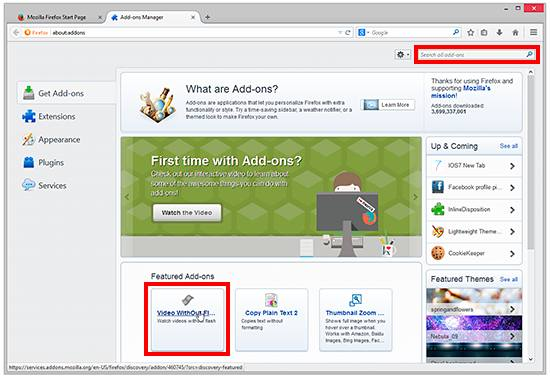
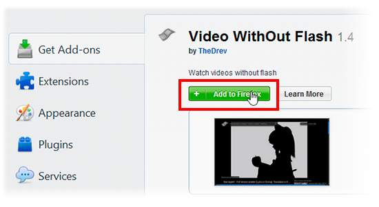

Add Ons
Add-ons are like apps that you install to add bells & whistles to Firefox. You can get add-ons that compare prices, check the weather, change the look of Firefox, listen to music, or even update your Facebook profile. This article covers the different types of add-ons available and how to find and install them.
See your installed Add-ons
- Click the menu button and choose Add-ons. The Add-ons Manager tab will open.
- Select the Extensions, Appearance or Plugins panels to view your add-ons.
Find and install add-ons
- Click the menu button and choose Add-ons. The Add-ons Manager tab will open.
- In the Add-ons Manager tab, select the Get Add-ons panel.
- To see more information on a Featured Add-on or Theme, click it. You can then click the green Add to Firefox button to install it
-
You can also search for specific add-ons by using the search box at the top. You can then install any add-ons you find with the Install button.

 - Firefox will download the requested add-on and may ask you to confirm that you want to install it.
- Click Restart Now if it pops up. Your tabs will be saved and restored after the restart.